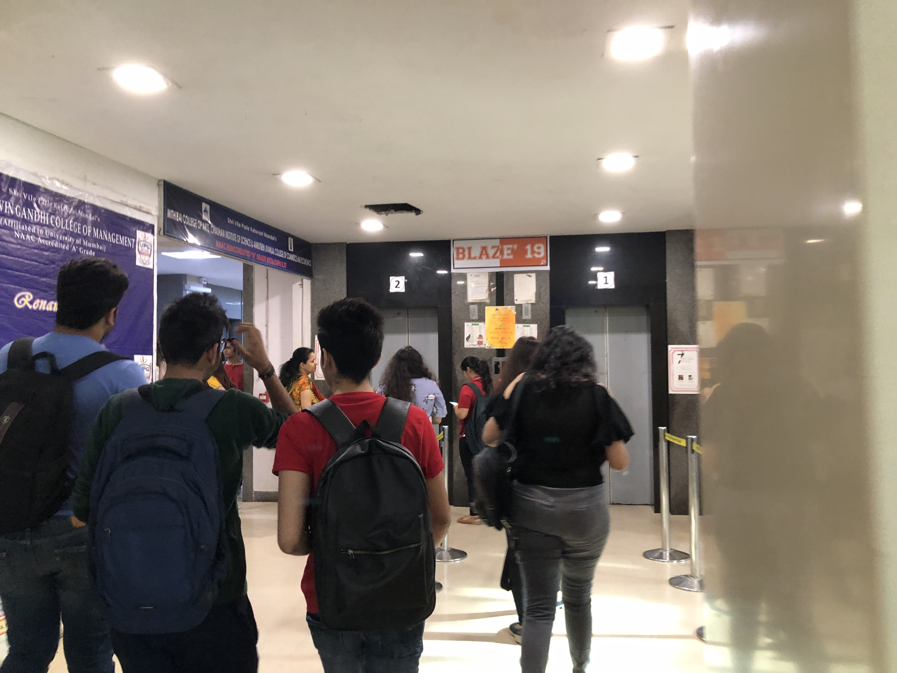
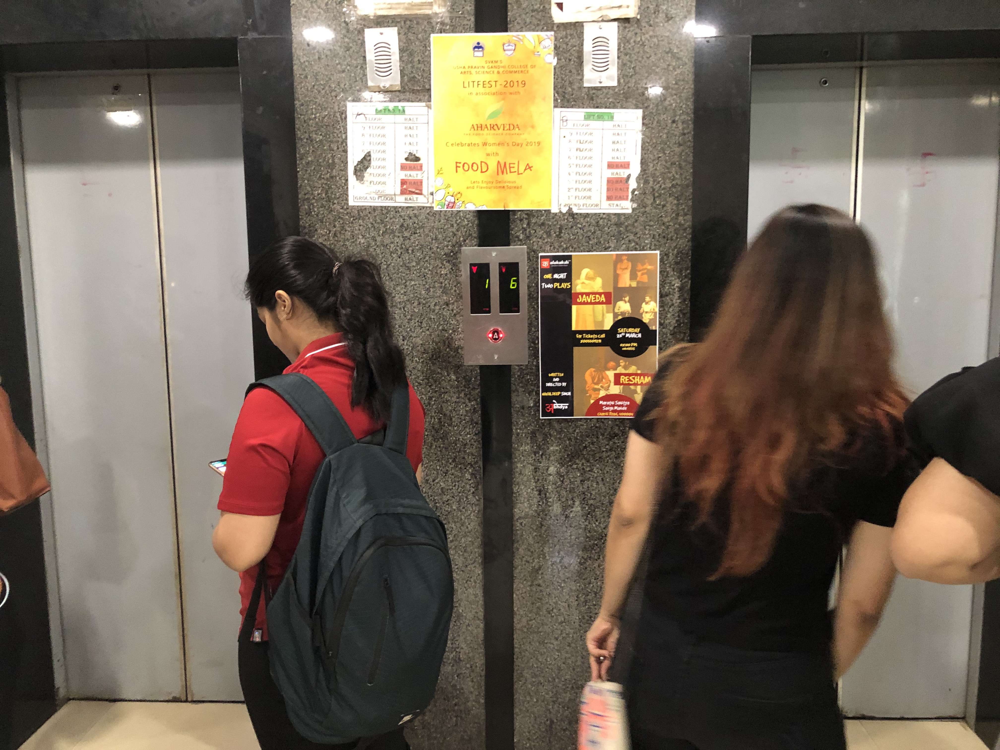
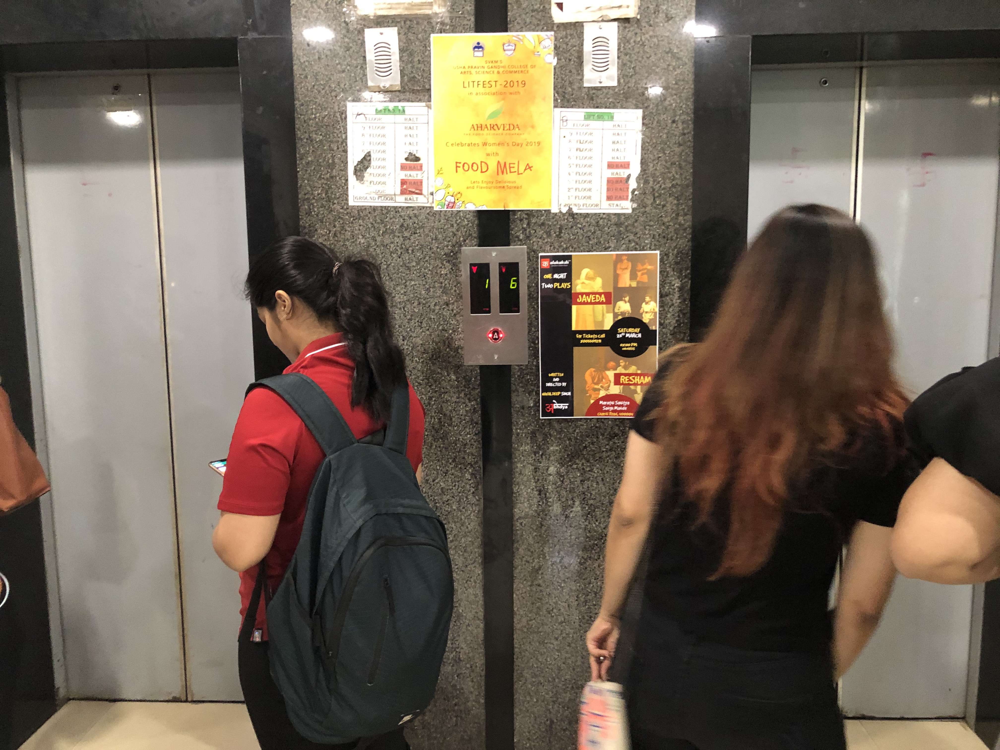
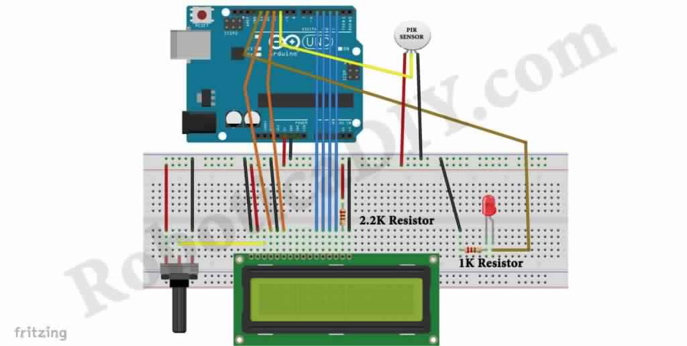
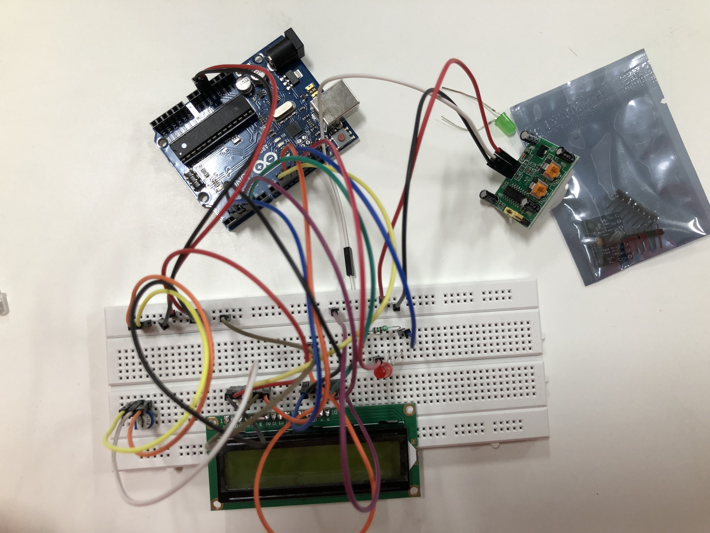
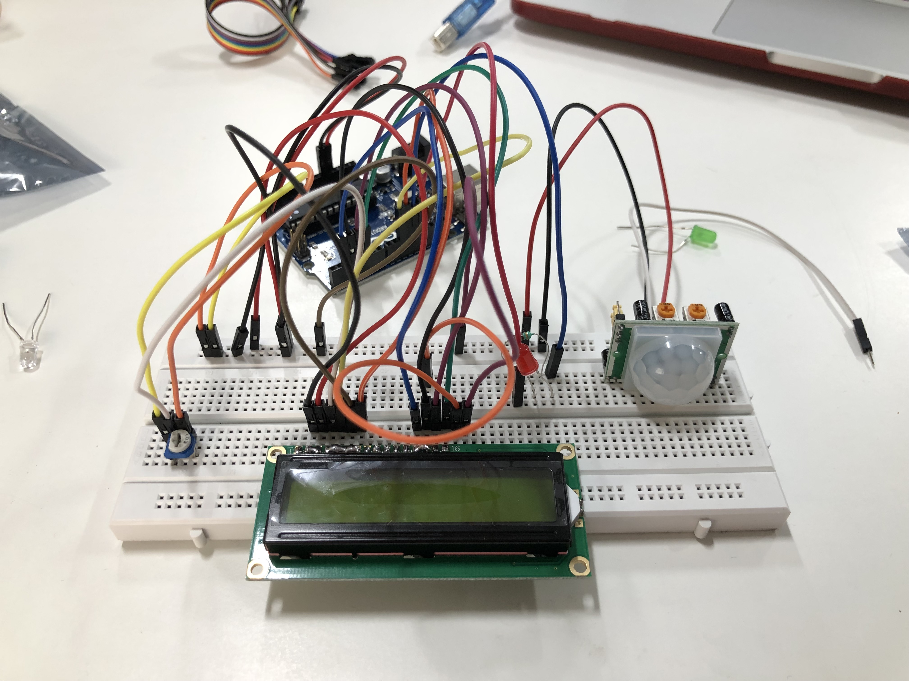
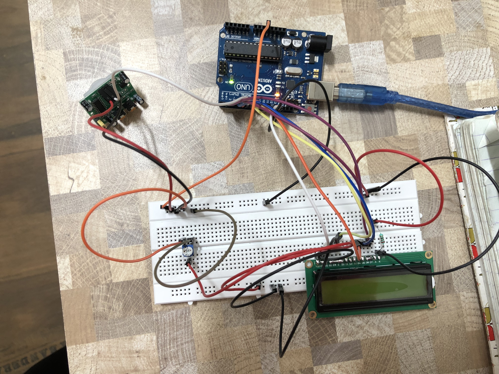

Journey
Day 2
Research
Day 2 Journey
The project started with research on:
- Pre-existing solutions,
- Listing all possible sensors that could be used,
- Camera Study by observing people's journey from college entrance to the lift;
- Noting time duartion for which lift stops on a particular floor.
Camera Study:

 

Low Fidelity Prototypes
The first prototype built was 'To count number of people around lift'.
Technology Plans
1. The OMRON D6T thermal sensor is able to detect the presence of stationary humans by detecting body heat (regardless of whether they move or not).
2. D6T-44L / D6T-8L Thermal sensor in a public places where there is lot of crowd such as playground,shopping mall, schools.
3. Estimating the density of crowd in real-time using infrared thermal video sequences. Thermographic images represent the electromagnetic radiation of an object in the far infrared range, which is 6 − 15µm.
4. The Pyroelectric Infrared Sensors (PIR) emit binary signal that in- dicate movement, while the signal frequency acts as an indicator of the speed of motion.
5. Using Image Processing to count number of people.
Low Fidelity Prototype 1
Low fidelity prototype research, material, code and working video reference
counter using motion detection sensor (PIR) and output will be shown on LCD display. It will count how many times object passed over it. (~to show how many people)
1. Arduino,
2. LCD display 16X2,
3. PIR sensor,
4. Potentiometer (For adjusting contrast of LCD),
5. LED,
6. Resistors,
7. Breadboard,
8. Jumper wire.

Arduino Code
// include the library code:
#include
// initialize the library with the numbers of the interface pins
LiquidCrystal lcd(12, 11, 5, 4, 3, 2);
int ledPin = 13;
int pirPin = 10;
int pirState = LOW; // we start, assuming no motion detected
int val = 0; // variable for reading the pin status
int counter = 0;
int currentState = 0;
int previousState = 0;
void setup() {
pinMode(ledPin, OUTPUT); // declare LED as output
pinMode(pirPin, INPUT); // declare sensor as input
lcd.begin(16, 2);
lcd.setCursor(4, 0);
lcd.print("counter");
}
void loop(){
val = digitalRead(pirPin); // read PIR sensor input value
if (val == HIGH) { // check if the input is HIGH
digitalWrite(ledPin, HIGH); // turn LED ON
if (pirState == LOW) {
// we have just turned on
currentState = 1;
// We only want to print on the output change, not state
pirState = HIGH;
delay(1000);
}
} else {
digitalWrite(ledPin, LOW); // turn LED OFF
if (pirState == HIGH){
// we have just turned of
currentState = 0;
// We only want to print on the output change, not state
pirState = LOW;
}
}
if(currentState != previousState){
if(currentState == 1){
counter = counter + 1;
lcd.setCursor(4,1);
lcd.print(counter);
delay(200);
}
}
}
Failed Prototype 1


Failed Prototype 2
